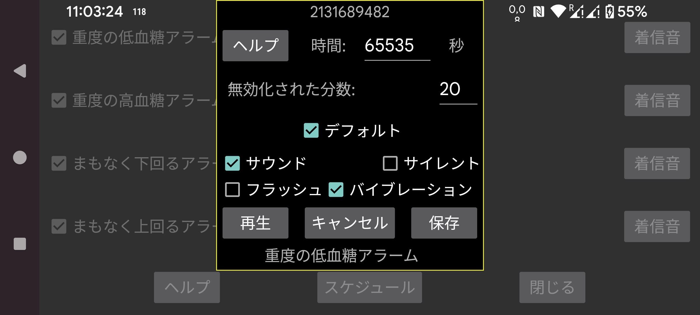

アラームや通知で再生する着信音と、何秒間鳴らすかを選択します。
無効化分数: 低血糖や高血糖が続く場合、アラームはすぐには再度鳴りません。状態が続いている場合に何分後にアラームを再度発生させるかを指定できます。
サウンド: 音を鳴らします。
デフォルト: デフォルトのサウンドを使います。
選択: 着信音を選択します。一部の Samsung スマートフォンではプリインストールされた着信音ピッカーアプリがクラッシュするため、他のアプリから利用できる別の着信音アプリをインストールする必要があります。例えば: https://play.google.com/store/apps/details?id=com.centralparkapps.ringo.ringtones または https://apkcombo.com/ringtone-picker/de.kumpewo.ringtones
バイブレーション: バイブレーションします。
サイレント: 「サイレント」がオンの場合、アラームを再生する前にオフにします。Juggluco に必要な権限がない場合、Juggluco に権限を付与するため Android 設定画面に誘導されます。「サイレント」をオンにして 再生 を押すと、「サイレント」 中にアラームが動作するかをテストできます。以前のバージョンの Juggluco では、アラーム後に「サイレント」が再びオンに戻されていました。現在のバージョンではそうしません。これは、自動の 「サイレント」期間中にアラームが鳴った場合、その状態が自動的にオフにならないという意図しない結果を生んでいたためです。「サイレント」中にアラームを聞きたくない場合、前の画面で「アラームをアラームとして扱う」も解除する必要があります。
フラッシュ: フラッシュライト付きのスマートフォンでは、同じ秒数だけ点滅させるオプションがあります。着信音が許可されておらず、フラッシュライトに関する明確なポリシーがない場合に便利です。